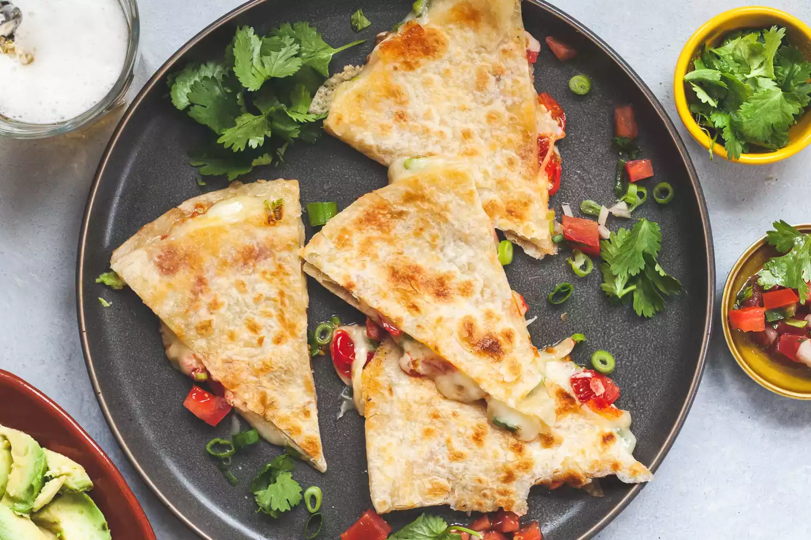

Quesadilla

Chicken and Cheese Quesadilla Recipe
How does a Central Pennsylvania Meat and Potatos guy end up with Quesadillas being one of his favorite foods? It's not hard to understand. Quesadillas are delicious! In this short blog, we'll walk through the recipe so you too can enjoy this amazing dish!
Ingredients
- Large Flour Tortillas
- Cheddar Cheese
- Mozzarella Cheese
- Queso Cheese
- Chicken Breast
- Sweet Corn
- Sour Cream (served on the side)
- Lettuce (served on the side)
Steps:
- Cut the chicken into bite-sized pieces
- Cook chicken in medium pan until slightly browned and cooked through
- Set chicken asside and wipe out pan
- Heat a drizzle of oil in pan used for chicken
- Add tortilla and flip occassionally (about every 10-20 seconds) until air pockets form
- Poke bubbles with fork if necessary to make flat
- Spread bottom of tortilla with queso
- Add chicken to hald the tortilla
- Cover chicken with mozzarell and cheddar cheese
- Add corn on top of chicken and cheese
- Fold tortilla over to close and cook on each side until tortilla is browned (about a minute per side)
- Cut into four triangles and serve with sour cream and lettuce on the side